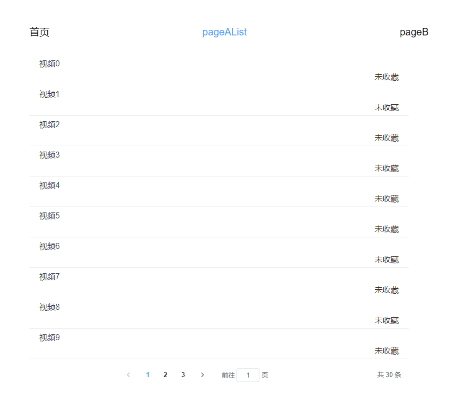
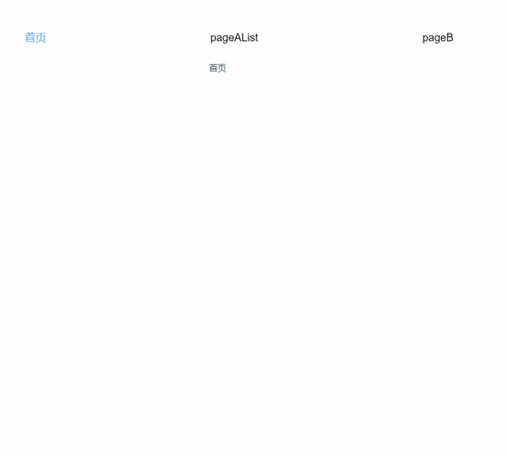
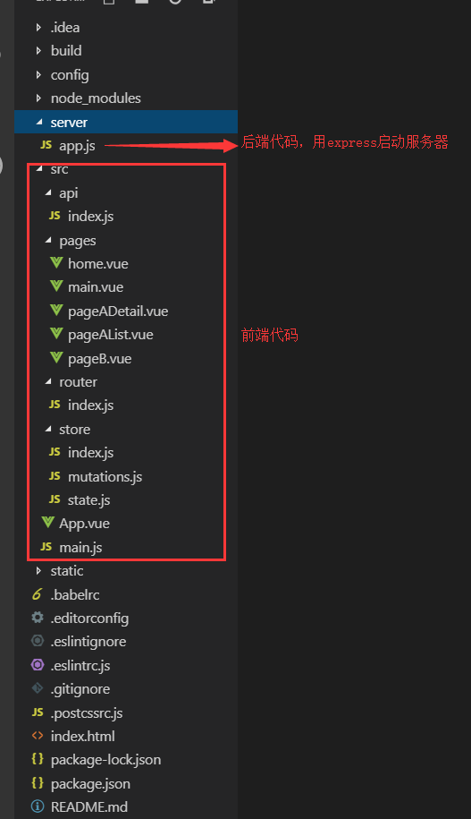

在开发vue的项目中有遇到了这样一个需求：一个视频列表页面，展示视频名称和是否收藏，点击进去某一项观看，可以收藏或者取消收藏，返回的时候需要记住列表页面的页码等状态，同时这条视频的收藏状态也需要更新, 但是从其他页面进来视频列表页面的时候不缓存这个页面，也就是进入的时候是视频列表页面的第一页

一句话总结一下： pageAList->pageADetail->pageAList, 缓存pageAList, 同时该视频的收藏状态如果发生变化需要更新， 其他页面->pageAList, pageAList不缓存
在网上找了很多别人的方法，都不满足我们的需求
然后我们团队几个人捣鼓了几天，还真的整出了一套方法，实现了这个需求
无图无真相，用一张gif图来看一下实现后的效果吧！！！

操作流程：
说明：
用vue-cli2的脚手架搭建了一个项目，用这个项目来说明如何实现
先来看看项目目录

删除了无用的components目录和assets目录，新增了src/pages目录和src/store目录, pages页面用来存放页面组件， store不多说，存放vuex相关的东西,新增了server/app.js目录，用来启动后台服务
const express = require('express')
// const bodyParser = require('body-parser')
const app = express()
let allList = Array.from({length: 30}, (v, i) => ({
id: i,
name: '视频' + i,
isCollect: false
}))
// 后台设置允许跨域访问
// 前后端都是本地localhost，所以不需要设置cors跨域，如果是部署在服务器上，则需要设置
// app.all('*', function (req, res, next) {
// res.header('Access-Control-Allow-Origin', '*')
// res.header('Access-Control-Allow-Headers', 'X-Requested-With')
// res.header('Access-Control-Allow-Methods', 'PUT,POST,GET,DELETE,OPTIONS')
// res.header('X-Powered-By', ' 3.2.1')
// res.header('Content-Type', 'application/json;charset=utf-8')
// next()
// })
app.use(express.json())
app.use(express.urlencoded({extended: false}))
// 1 获取所有的视频列表
app.get('/api/getVideoList', function (req, res) {
let query = req.query
let currentPage = query.currentPage
let pageSize = query.pageSize
let list = allList.slice((currentPage - 1) * pageSize, currentPage * pageSize)
res.json({
code: 0,
data: {
list,
total: allList.length
}
})
})
// 2 获取某一条视频详情
app.get('/api/getVideoDetail/:id', function (req, res) {
let id = Number(req.params.id)
let info = allList.find(v => v.id === id)
res.json({
code: 0,
data: info
})
})
// 3 收藏或者取消收藏视频
app.post('/api/collectVideo', function (req, res) {
let id = Number(req.body.id)
let isCollect = req.body.isCollect
allList = allList.map((v, i) => {
return v.id === id ? {...v, isCollect} : v
})
res.json({code: 0})
})
const PORT = 3003
app.listen(PORT, function () {
console.log('app is listening port' + PORT)
})
在路由配置里面把需要缓存的路由的meta添加keepAlive属性，值为true, 这个想必大家都知道，是缓存路由组件的
在我们项目里面，需要缓存的路由是pageAList，所以这个路由的meta的keepAlive设置成true,其他路由正常写，路由文件src/router/index.js如下：
import Vue from 'vue'
import Router from 'vue-router'
import home from '../pages/home'
import pageAList from '../pages/pageAList'
import pageADetail from '../pages/pageADetail'
import pageB from '../pages/pageB'
import main from '../pages/main'
Vue.use(Router)
export default new Router({
routes: [
{
path: '/',
name: 'main',
component: main,
redirect: '/home',
children: [
{
path: 'home',
name: 'home',
component: home
},
{
path: 'pageAList',
name: 'pageAList',
component: pageAList,
meta: {
keepAlive: true
}
},
{
path: 'pageB',
component: pageB
}
]
},
{
path: '/pageADetail',
name: 'pageADetail',
component: pageADetail
}
]
})
vuex的store.js里面存储一个名为excludeComponents的数组,这个数组用来操作需要做缓存的组件
state.js
const state = {
excludeComponents: []
}
export default state
同时在mutations.js里面加入两个方法， addExcludeComponent是往excludeComponents里面添加元素的，removeExcludeComponent是往excludeComponents数组里面移除元素
注意： 这两个方法的第二个参数是数组或者组件name
mutations.js
const mutations = {
addExcludeComponent (state, excludeComponent) {
let excludeComponents = state.excludeComponents
if (Array.isArray(excludeComponent)) {
state.excludeComponents = [...new Set([...excludeComponents, ...excludeComponent])]
} else {
state.excludeComponents = [...new Set([...excludeComponents, excludeComponent])]
}
},
// excludeComponent可能是组件name字符串或者数组
removeExcludeComponent (state, excludeComponent) {
let excludeComponents = state.excludeComponents
if (Array.isArray(excludeComponent)) {
for (let i = 0; i < excludeComponent.length; i++) {
let index = excludeComponents.findIndex(v => v === excludeComponent[i])
if (index > -1) {
excludeComponents.splice(index, 1)
}
}
} else {
for (let i = 0, len = excludeComponents.length; i < len; i++) {
if (excludeComponents[i] === excludeComponent) {
excludeComponents.splice(i, 1)
break
}
}
}
state.excludeComponents = excludeComponents
}
}
export default mutations
将App.vue的router-view用keep-alive组件包裹， main.vue的路由也需要这么包裹，这点非常重要，因为pageAList组件是从它们的router-view中匹配的
<keep-alive :exclude="excludeComponents"><som-component></some-component></keep-alive>这个写法大家应该不会陌生，这也是尤大神官方推荐的缓存方法, exclude属性值可以是组件名称字符串(组件选项的name属性)或者数组，代表不缓存这些组件，所以vuex里面的addExcludeComponent是代表要缓存组件，addExcludeComponent代表不缓存组件，这里稍微有点绕，请牢记这个规则，这样接下来你就不会被绕进去了。
App.vue
<template>
<div id="app">
<keep-alive :exclude="excludeComponents">
<router-view v-if="$route.meta.keepAlive"></router-view>
</keep-alive>
<router-view v-if="!$route.meta.keepAlive"></router-view>
</div>
</template>
<script>
export default {
name: 'App',
computed: {
excludeComponents () {
return this.$store.state.excludeComponents
}
}
}
</script
main.vue
<template>
<div>
<ul>
<li v-for="nav in navs" :key="nav.name">
<router-link :to="nav.name">{{nav.title}}</router-link>
</li>
</ul>
<keep-alive :exclude="excludeComponents">
<router-view v-if="$route.meta.keepAlive"></router-view>
</keep-alive>
<router-view v-if="!$route.meta.keepAlive"></router-view>
</div>
</template>
<script>
export default {
name: 'main.vue',
data () {
return {
navs: [{
name: 'home',
title: '首页'
}, {
name: 'pageAList',
title: 'pageAList'
}, {
name: 'pageB',
title: 'pageB'
}]
}
},
methods: {
},
computed: {
excludeComponents () {
return this.$store.state.excludeComponents
}
},
created () {
}
}
</script>
接下来的两点设置非常重要
对于需要缓存的一级路由pageAList，添加两个路由生命周期钩子beforeRouteEnter和beforeRouteLeave
import {getVideoList} from '../api'
export default {
name: 'pageAList', // 组件名称，和组件对应的路由名称不需要相同
data () {
return {
currentPage: 1,
pageSize: 10,
total: 0,
allList: [],
list: []
}
},
methods: {
getVideoList () {
let params = {currentPage: this.currentPage, pageSize: this.pageSize}
getVideoList(params).then(r => {
if (r.code === 0) {
this.list = r.data.list
this.total = r.data.total
}
})
},
goIntoVideo (item) {
this.$router.push({name: 'pageADetail', query: {id: item.id}})
},
handleCurrentPage (val) {
this.currentPage = val
this.getVideoList()
}
},
beforeRouteEnter (to, from, next) {
next(vm => {
vm.$store.commit('removeExcludeComponent', 'pageAList')
next()
})
},
beforeRouteLeave (to, from, next) {
let reg = /pageADetail/
if (reg.test(to.name)) {
this.$store.commit('removeExcludeComponent', 'pageAList')
} else {
this.$store.commit('addExcludeComponent', 'pageAList')
}
next()
},
activated () {
this.getVideoList()
},
mounted () {
this.getVideoList()
}
}
对于需要缓存的一级路由的二级路由组件pageADetail，添加beforeRouteLeave路由生命周期钩子
在这个beforeRouteLeave钩子里面，需要先清除一级组件的缓存状态，如果跳转路由匹配到一级组件，再缓存一级组件
beforeRouteLeave (to, from, next) {
let componentName = ''
// 离开详情页时,将pageAList添加到exludeComponents里，也就是将需要缓存的页面pageAList置为不缓存状态
let list = ['pageAList']
this.$store.commit('addExcludeComponent', list)
// 缓存组件路由名称到组件name的映射
let map = new Map([['pageAList', 'pageAList']])
componentName = map.get(to.name) || ''
// 如果离开的时候跳转的路由是pageAList，将pageAList从exludeComponents里面移除，也就是要缓存pageAList
this.$store.commit('removeExcludeComponent', componentName)
next()
}
自认为用这个方案来实现缓存，最终的效果非常完美了
缺点：
项目源码的github地址，欢迎大家克隆下载
npm install安装项目依赖npm run server启动后台服务器监听本地3003端口npm run dev启动前端项目上面的方法二级缓存就够了
上面我们说的是两个页面，二级缓存的问题，现在假设有三个页面，A1-A2-A3,一步步点进去，要求从A3返回到A2的时候，缓存A2，再从A2返回A1的时候，缓存A1，大家可以自己动手研究下，这里就不写了，其实就是上面的思路，留给大家研究，大家可以关注我的微信公众号，里面有三级缓存的代码答案。
对不起，还是不能免俗，不管你们如何不满，我还是要给我的公众号打广告，名字很俗，前端研究中心，但是内容不俗，不定期更新优质前端内容：原创或者翻译国外优秀教程，下面是公众号的二维码，欢迎大家扫码加入，一起学习和进步。